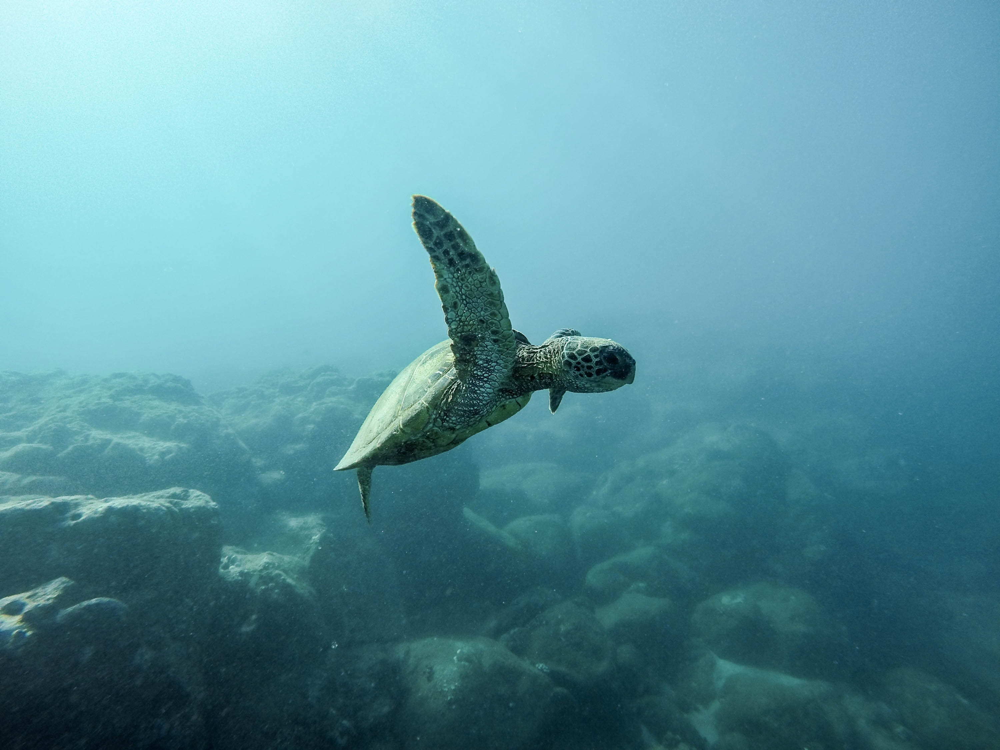
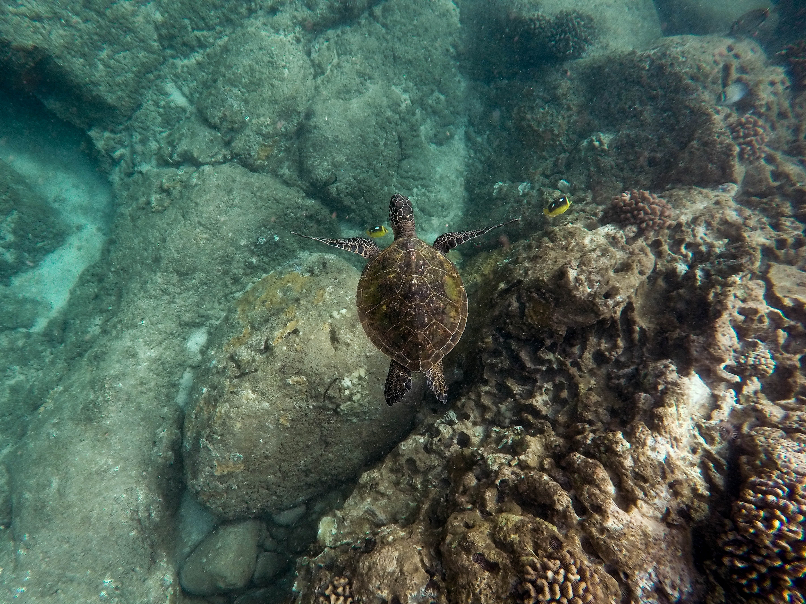

The primary focus of the Bentota Turtle Hatchery is to safeguard sea turtles and their eggs from various threats,
such as natural predators, poaching, and habitat destruction.
The hatchery collects turtle eggs from vulnerable nesting sites along the Sri Lankan coast,
ensuring their safe incubation and hatching.
The Bentota Turtle Hatchery serves as a vital sanctuary for sea turtles,
providing a safe environment for their eggs to hatch and raising awareness about their conservation needs.
Through its conservation efforts, education programs, and community engagement,
the hatchery contributes to the preservation of these endangered species and the overall health of the marine ecosystem.

The hatchery works with several species of sea turtles found in Sri Lanka, including the Green Turtle, Hawksbill Turtle, Olive Ridley Turtle, Loggerhead Turtle, and Leatherback Turtle. These species are considered endangered or critically endangered due to factors such as pollution, fishing activities, and coastal development.
Green Turtles

These turtles are known to nest in Akurella, Mawella, Kosgoda, Rekawa, Ambalantota, Yala & Bundala of Sri Lanka. They are widely distributed in tropical & sub tropical regions especially around oceanic islands & along coasts with wide sandy beaches. Also they are seen in all oceans with primarily temperate waters. There is a huge population in Atlantic & Eastern Pacific oceans.
Hawksbill Turtles

Nesting sites of Sri Lanka includes Kataduwa, Bentota, Udappuwa, Kosgoda, Karaduwa, Talaimannar, Jaffna, Galkissa, Talawila, Palatupana, Amadhauwa. These turtles are found mainly in the tropical regions of the Atlantic, Pacific, Indian Oceans & Mediterranean Sea. They are most associated with tropical waters. Sri Lanka's nesting sites and turtles enrich coastal biodiversity.

Loggerhead Turtle

They are found in south & south-east shore of Sri Lanka including Kosgoda & Rakawa. This turtle is found in nearly all the world's temperate and tropical oceans: the Atlantic Ocean from Newfoundland to Argentina, the Indian Ocean from southern Africa to the Arabian Gulf, the Mediterranean Sea, and the Pacific Ocean from Alaska to Chile and Australia to Japan.
